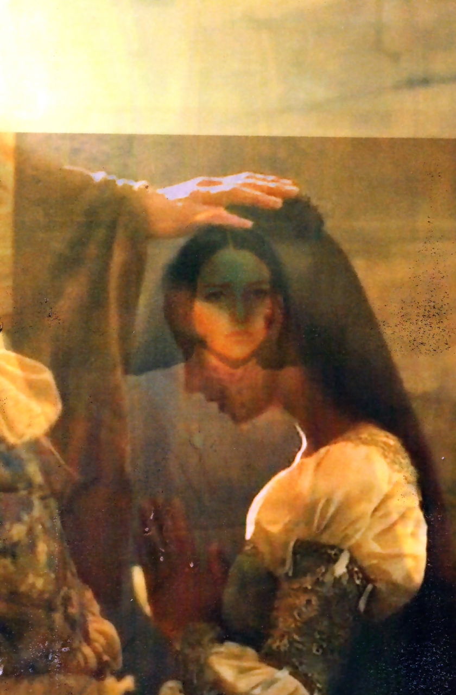
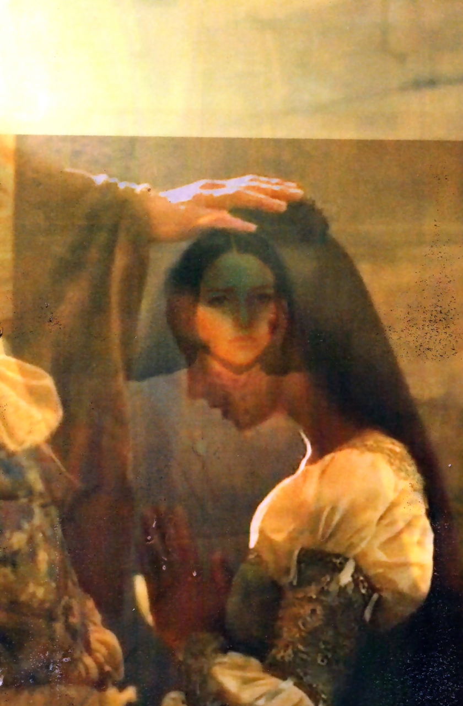

In my third year at Luca School of Arts, I had the opportunity to
participate in an Erasmus exchange in Lyon, where I studied at ENSBA
(École Nationale Supérieure des Beaux-Arts). During that semester,
we were given an interesting assignment: to create a custom font
inspired by the typefaces of old newspapers. We were provided with a
selection to choose from, and I decided to work with the font from
Le Meridional.
This was my first experience designing a typeface, which made the
project particularly exciting for me. Upon returning to Belgium, I
continued to refine and develop the font, making the entire process
a rewarding journey. For the final presentation, I decided to
showcase the font in a newspaper format, incorporating various
headlines, paying homage to the historical roots of the original
typeface.
In my third year at Luca School of Arts, we kicked off the year with a major assignment: designing a book on graphic design. We were provided with interviews and essays from graphic designers to include in our book. For inspiration, we had to base our design on an existing book we liked. While browsing a thrift store, I came across a book about antiques. Its unique design featured large text and cut-out elements that intrigued me. I decided to incorporate these features into my project, experimenting with the interplay between bold typography and cut-out imagery. The result was a book design that combined these elements in a creative and engaging way.
 

This is my masters project, Juliet and Romeo. It was a research to the iconic story 'Romeo and Juliet'. In my masters thesis I wrote a story about Romeo and Juliet, in the story I researched and thought of how every element takes its place in today's society. When researching, I also looked at how this story was visualised, since there are a lot of versions of it. I layered them and created pictures where the romeos and juliets come out distorted.